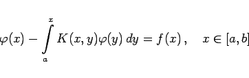
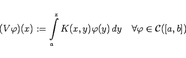
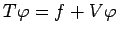
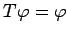

Inhalt Index DeskTop Bronstein

 Funktionalanalysis Metrische Räume Vollständige metrische Räume Einige Anwendungen des Kontraktionsprinzips
Funktionalanalysis Metrische Räume Vollständige metrische Räume Einige Anwendungen des Kontraktionsprinzips


Die VOLTERRAsche Integralgleichung
|  | (12.68) |
mit stetigem Kern und stetiger rechter Seite kann man mit Hilfe des VOLTERRAschen Integraloperators
|  | (12.69) |
und  als das Fixpunktproblem  im Raum  unter Anwendung des Fixpunktsatzes behandeln.
unter Anwendung des Fixpunktsatzes behandeln.